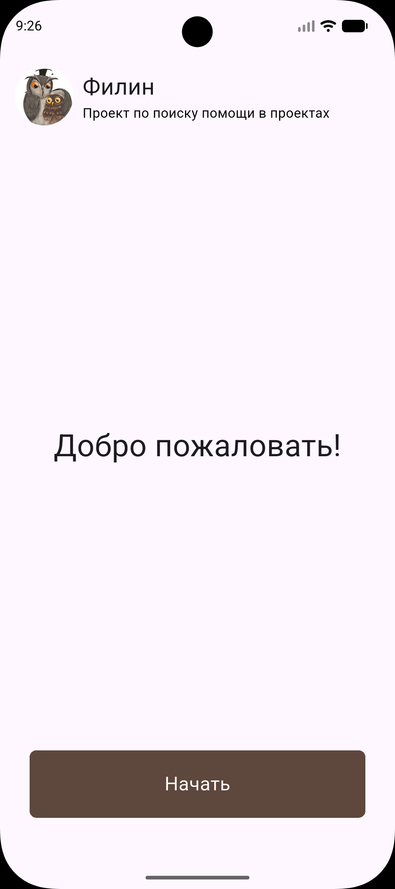

Филин
Ежегодно более 3000 студентов Московского Политеха выбирают темы ВКР и проектов. Отсутствие цифрового инструмента для поиска научного руководителя создает хаос, перегрузку преподавателей и потерю времени. Назрела необходимость в едином прозрачном сервисе.
